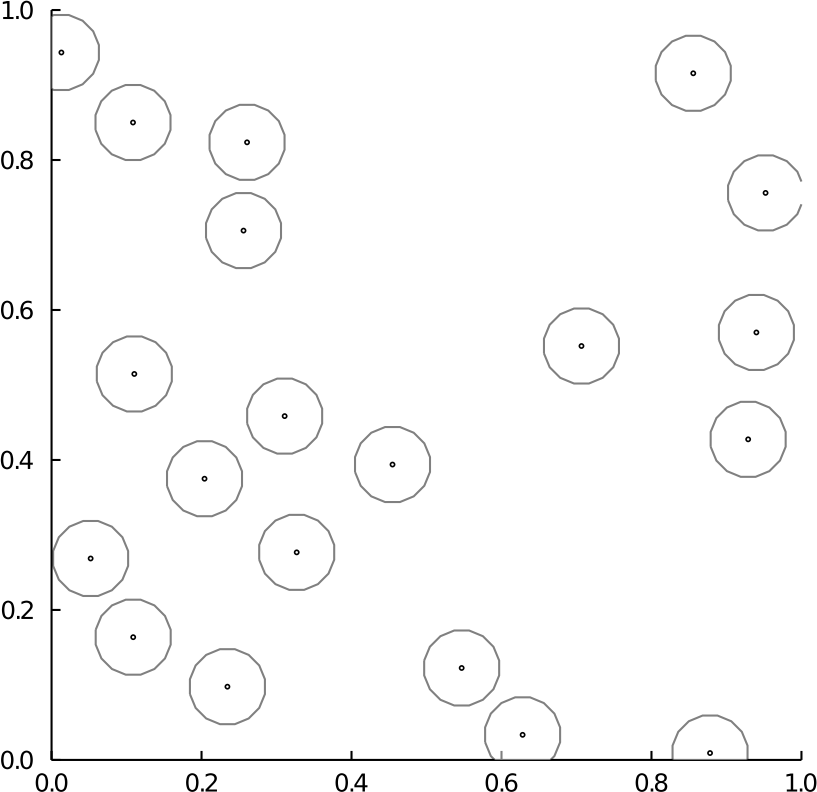
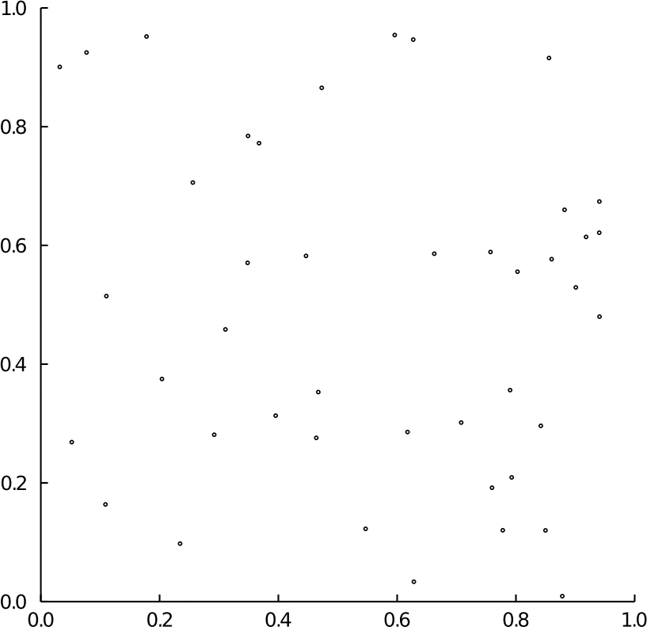

Spatial point processes
Partial rejection sampling (PRS) can be applied to generate exact samples from pairwise Gibbs point processes with finite interaction range.
For more details on spatial point processes please refer to Jesper. Møller , Rasmus Plenge. Waagepetersen (2004) and references therein.
PartialRejectionSampling.AbstractSpatialPointProcess — TypeAbstractSpatialPointProcess{T<:Vector{Float64}} <: AbstractPointProcess{T}Abstract type encoding point processes defined on $\mathbb{R}^d$.
Concrete instances must have a window field of type PRS.AbstractSpatialWindow
PartialRejectionSampling.window — Methodwindow(pp::AbstractSpatialPointProcess)::AbstractSpatialWindow = pp.windowPartialRejectionSampling.dimension — Methoddimension(pp::AbstractSpatialPointProcess) = dimension(window(pp))Poisson point process
PartialRejectionSampling.HomogeneousPoissonPointProcess — TypeHomogeneousPoissonPointProcess{T<:Vector{Float64}} <: AbstractSpatialPointProcess{T}Homegeneous Poisson point process with intensity $\beta > 0$, denoted $\operatorname{Poisson}(\beta)$.
$\operatorname{Poisson}(\beta)$ has density (w.r.t. the homogenous Poisson point process with unit intensity $\operatorname{Poisson}(1)$) proportional to
\[ \prod_{x \in X} \beta.\]
PartialRejectionSampling.HomogeneousPoissonPointProcess — TypeHomogeneousPoissonPointProcess(
β::Real,
window::Union{Nothin,AbstractSpatialWindow}=nothing
)Construct a PRS.HomogeneousPoissonPointProcess with intensity β restricted to window.
Default window (window=nothing) is PRS.SquareWindow().
using PartialRejectionSampling
β = 40
win = PRS.SquareWindow(zeros(2), 1)
PRS.HomogeneousPoissonPointProcess(β, win)
# output
HomogeneousPoissonPointProcess{Array{Float64,1}}
- β = 40.0
- window = SquareWindow [0.0, 1.0]^2PartialRejectionSampling.generate_sample — Methodgenerate_sample(
pp::HomogeneousPoissonPointProcess{Vector{T}};
win::Union{Nothing,AbstractWindow}=nothing,
rng=-1
)::Matrix{T} where {T<:Float64}Generate an exact sample from PRS.HomogeneousPoissonPointProcess on window win. Sampled points are stored as columns of the output matrix.
Default window (win=nothing) is window(pp).
PartialRejectionSampling.generate_sample_poisson_union_balls — Methodgenerate_sample_poisson_union_balls(
β::Real,
centers::Matrix,
radius::Real;
win::Union{Nothing,AbstractWindow}=nothing,
rng=-1
)::Matrix{Float64}Generate an exact sample from a homogenous PRS.HomogeneousPoissonPointProcess Poisson(β) on $\bigcup_{i} B(c_i, r)$ (union of balls centered at $c_i$ with the same radius $r$).
If win ≂̸ nothing, returns the points falling in win.
Use the independence property of the Poisson point process on disjoint subsets in order to
- Sample from Poisson(β) on $B(c_1, r)$,
- Sample from Poisson(β) on $B(c_2, r) \setminus B(c_1, r)$,
- Sample from Poisson(β) on $B(c_j, r) \setminus \bigcup_{i<j} B(c_i, r)$,
- ...
PartialRejectionSampling.intensity — Methodintensity(pp::HomogeneousPoissonPointProcess) = pp.βHard core point process
PartialRejectionSampling.HardCorePointProcess — TypeHardCorePointProcess{T<:Vector{Float64}} <: AbstractSpatialPointProcess{T}Spatial point process with density (w.r.t. the homogenous Poisson point process with unit intensity) proportional to
\[ \prod_{x \in X} \beta \prod_{\{x, y\} \subseteq X} 1_{ \left\| x - y \right\|_2 > r },\]
where $\beta > 0$ is called the background intensity and $r > 0$ the interaction range.
PRS.HardCorePointProcess can be viewed as
PRS.HomogeneousPoissonPointProcessconditioned to having no pair of points at distance less than $r$,PRS.StraussPointProcesswith interaction coefficient $\gamma=0$.
See also
PRS.HardCoreGraph, the graph counterpart ofPRS.HardCorePointProcess.
Example
A realization for $\beta=38$ and $r=0.1$ on $[0, 1]^2$.

PartialRejectionSampling.HardCorePointProcess — TypeHardCorePointProcess(
β::Real,
r::Real,
window::Union{Nothing,AbstractSpatialWindow}=nothing
)Construct a PRS.HardCorePointProcess with intensity β and interaction range r, restricted to window.
Default window (window=nothing) is PRS.SquareWindow().
using PartialRejectionSampling
β, r = 40, 0.05
win = PRS.SquareWindow(zeros(2), 1)
PRS.HardCorePointProcess(β, r, win)
# output
HardCorePointProcess{Array{Float64,1}}
- β = 40.0
- r = 0.05
- window = SquareWindow [0.0, 1.0]^2PartialRejectionSampling.generate_sample — Methodgenerate_sample(
pp::HardCorePointProcess{T}
win::Union{Nothing,AbstractWindow}=nothing,
rng=-1
)::Vector{T} where {T}Generate an exact sample from the PRS.HardCorePointProcess.
Default window (win=nothing) is window(pp)=pp.window.
Default sampler is PRS.generate_sample_prs.
See also
PartialRejectionSampling.generate_sample_prs — Methodgenerate_sample_prs(
pp::HardCorePointProcess{T}
win::Union{Nothing,AbstractWindow}=nothing,
rng=-1
)::Vector{T} where {T}Sample from PRS.HardCorePointProcess using Partial Rejection Sampling (PRS) of Heng Guo , Mark Jerrum (2018).
Default window (win=nothing) is window(pp)=pp.window.
See also
Example
A illustration of the procedure for $\beta=38$ and $r=0.1$ on $[0, 1]^2$ where points are marked with a circle of radius $r/2$.

PartialRejectionSampling.gibbs_interaction — Methodgibbs_interaction(
pp::HardCorePointProcess{T},
cell1::SpatialCellGridPRS{T},
cell2::SpatialCellGridPRS{T}
)::Real where {T}Compute the pairwise Gibbs interaction for a PRS.HardCorePointProcess between $C_1$=cell1 and $C_2$=cell2,
\[ \prod_{(x, y) \in C_1 \times C_2} 1_{ \left\|x - y\right\|_2 \leq r }.\]
PartialRejectionSampling.intensity — Methodintensity(pp::HardCorePointProcess) = pp.βPartialRejectionSampling.interaction_coefficient — Methodinteraction_coefficient(pp::HardCorePointProcess) = 0.0PartialRejectionSampling.interaction_range — Methodinteraction_range(pp::HardCorePointProcess) = pp.rPartialRejectionSampling.isattractive — Methodisattractive(pp::HardCorePointProcess) = falsePartialRejectionSampling.isrepulsive — Methodisrepulsive(pp::HardCorePointProcess) = truePartialRejectionSampling.papangelou_conditional_intensity — Methodpapangelou_conditional_intensity(
pp::HardCorePointProcess{Vector{T}},
x::AbstractVector{T},
X::Union{AbstractVector{Vector{T}},AbstractSet{Vector{T}}}
)::Real where {T}Compute the Papangelou conditional intensity of the point process pp
\[ \beta \prod_{y\in X} 1_{\{\left\| x - y \right\|_2 > r\}},\]
where $\beta=$ pp.β and $r=$ pp.r.
PartialRejectionSampling.upper_bound_papangelou_conditional_intensity — Methodupper_bound_papangelou_conditional_intensity(pp::HardCorePointProcess) = intensity(pp)Strauss point process
PartialRejectionSampling.StraussPointProcess — TypeStraussPointProcess{T<:Vector{Float64}} <: AbstractSpatialPointProcess{T}Spatial point process with density (w.r.t. the homogenous Poisson point process with unit intensity) given by
\[ \prod_{x \in X} \beta \prod_{\{x, y\} \subseteq X} \gamma^{ 1_{ \left\| x - y \right\|_2 \leq r } } = \beta^{|X|} \gamma^{|\{\{x, y\} \subseteq X ~;~ \left\| x - y \right\|_2 \leq r\}|},\]
with intensity $\beta > 0$, interaction coefficient $0\leq \gamma\leq 1$ and interaction range $r > 0$.
- $\gamma = 0$ corresponds to the
PRS.HardCorePointProcess, - $\gamma = 1$ corresponds to the
PRS.HomogeneousPoissonPointProcess.
See also
- Section 6.2.2 of Jesper. Møller , Rasmus Plenge. Waagepetersen (2004).
PartialRejectionSampling.StraussPointProcess — TypeStraussPointProcess(
β::Real,
γ::Real,
r::Real,
window::Union{Nothing,AbstractSpatialWindow}=nothing
)Construct a PRS.StraussPointProcess with intensity β, interaction coefficient γ, and interaction range r, restricted to window.
Default window (window=nothing) is PRS.SquareWindow().
using PartialRejectionSampling
β, γ, r = 2.0, 0.2, 0.7
win = PRS.SquareWindow([0.0, 0.0], 10.0)
PRS.StraussPointProcess(β, γ, r, win)
# output
StraussPointProcess{Array{Float64,1}}
- β = 2.0
- γ = 0.2
- r = 0.7
- window = SquareWindow [0.0, 10.0]^2Example
A illustration of the procedure for $\beta=78, \gamma=0.1$ and $r=0.07$ on $[0, 1]^2$ where points are marked with a circle of radius $r/2$.

PartialRejectionSampling.generate_sample — Methodgenerate_sample(
pp::StraussPointProcess{T};
win::Union{Nothing,AbstractWindow}=nothing,
rng=-1
)::Vector{T} where {T}Genererate an exact sample from PRS.StraussPointProcess.
Default window (win=nothing) is window(pp)=pp.window.
Default sampler is PRS.generate_sample_dcftp.
See also
PartialRejectionSampling.generate_sample_prs — Methodgenerate_sample_prs(
pp::StraussPointProcess{T};
win::Union{Nothing,AbstractWindow}=nothing,
rng=-1
)::Vector{T} where {T}Genererate an exact sample from PRS.StraussPointProcess using Partial Rejection Sampling (PRS).
Default window (win=nothing) is window(pp)=pp.window.
Default sampler is PRS.generate_sample_grid_prs.
PartialRejectionSampling.gibbs_interaction — Methodgibbs_interaction(
pp::StraussPointProcess{T},
cell1::SpatialCellGridPRS{T},
cell2::SpatialCellGridPRS{T}
)::Real where {T}Compute the pairwise Gibbs interaction for a PRS.StraussPointProcess between $C_1$=cell1 and $C_2$=cell2,
\[ \prod_{(x, y) \in C_1 \times C_2} \gamma^{ 1_{ \left\|x - y\right\|_2 \leq r } }.\]
PartialRejectionSampling.intensity — Methodintensity(pp::StraussPointProcess) = pp.βPartialRejectionSampling.interaction_coefficient — Methodinteraction_coefficient(pp::StraussPointProcess) = pp.γPartialRejectionSampling.interaction_range — Methodinteraction_range(pp::StraussPointProcess) = pp.rPartialRejectionSampling.isattractive — Methodisattractive(pp::StraussPointProcess) = falseWe consider only repulsive PRS.StraussPointProcess since $0 \leq \gamma \leq 1$.
PartialRejectionSampling.isrepulsive — Methodisrepulsive(pp::StraussPointProcess) = trueWe consider only repulsive PRS.StraussPointProcess since $0 \leq \gamma \leq 1$.
PartialRejectionSampling.papangelou_conditional_intensity — Methodpapangelou_conditional_intensity(
pp::StraussPointProcess{Vector{T}},
x::AbstractVector{T},
X::Union{AbstractVector{Vector{T}}, AbstractSet{Vector{T}}}
)::Real where {T}Compute the Papangelou conditional intensity of the point process pp
\[ \beta \gamma^{|\{y \in X ~;~ \left\| x - y \right\|_2 \leq r\}|} ~ 1_{x \notin X},\]
where $\beta=$ pp.β, $\gamma=$ pp.γ and $r=$ pp.r.
PartialRejectionSampling.upper_bound_papangelou_conditional_intensity — Methodupper_bound_papangelou_conditional_intensity(pp::StraussPointProcess) = intensity(pp)Windows
PartialRejectionSampling.AbstractSpatialWindow — TypeAbstractSpatialWindow{T<:Float64} <: AbstractWindow{T}Abstract type representing a spatial window $\subseteq \mathbb{R}^d$
See also
PartialRejectionSampling.AbstractRectangleWindow — TypeAbstractRectangleWindow{T<:Float64} <: AbstractSpatialWindow{T}Abstract type representing a hyperrectangle $\prod_i [c_i, c_i + w_i]$
See also
PartialRejectionSampling.BallWindow — TypeBallWindow{T<:Float64} <: AbstractSpatialWindow{T}Structure representing a closed ball $B(c, r)$, with fields
ccenter of the ball,rradius of the ball.
PartialRejectionSampling.BallWindow — TypeBallWindow(c::AbstractVector=zeros(2), r::Real)Construct a PRS.BallWindow.
PartialRejectionSampling.RectangleWindow — TypeRectangleWindow{T<:Float64} <: AbstractRectangleWindow{T}Structure representing a hyperrectangle $\prod_i [c_i, c_i + w_i]$, with fields
clower left corner of the hyperrectanglewwidth vector of the hyperrectangle along each coordinate
PartialRejectionSampling.RectangleWindow — MethodRectangleWindow(c::AbstractVector, w::Vector)Construct a PRS.RectangleWindow.
PartialRejectionSampling.SquareWindow — TypeSquareWindow{T<:Float64} <: AbstractRectangleWindow{T}Structure representing a hypercube $\prod_i [c_i, c_i + w]$, with fields
clower left corner of the hypercube,wlength of the hypercube.
PartialRejectionSampling.SquareWindow — TypeSquareWindow(c::AbstractVector=zeros(2), w::Real=1)Construct a PRS.SquareWindow.
Base.in — MethodBase.in(
x::AbstractVector,
win::AbstractRectangleWindow
)Check if $x \in B(c, r)$, i.e., $\left\| x - c \right\| \leq r$.
Base.in — MethodBase.in(
x::AbstractVector,
win::AbstractRectangleWindow
)Check if $x \in \prod_{i} [c_i, c_i + w_i]$.
Base.rand — MethodBase.rand(
win::BallWindow{T};
rng=-1
)::Vector{T} where {T}Sample uniformly at random in window win.
Base.rand — MethodBase.rand(
win::AbstractRectangleWindow{T};
rng=-1
)::Vector{T} where {T}Sample uniformly at random in window win.
Base.rand — MethodBase.rand(
win::BallWindow{T},
n::Int;
rng=-1
)::Matrix{T} where {T}Sample n points uniformly at random in window win.
Base.rand — MethodBase.rand(
win::AbstractRectangleWindow{T},
n::Int;
rng=-1
)::Matrix{T} where {T}Sample n points uniformly at random in window win.
PartialRejectionSampling.dimension — Methoddimension(win::AbstractSpatialWindow) = length(win.c)Return the dimension of window win.
PartialRejectionSampling.rectangle_square_window — Methodrectangle_square_window(c, w)Construct a PRS.RectangleWindow or a PRS.SquareWindow depending .on whether all coordinates of w are the same.
PartialRejectionSampling.volume — Methodvolume(win::BallWindow) =Return the volume of the ball $B(c, r)\subseteq R^d$ as
\[ \frac{π^{d/2} r^d}{\Gamma(d/2 + 1)} \cdot\]
PartialRejectionSampling.volume — Methodvolume(win::RectangleWindow) = prod(win.w)PartialRejectionSampling.volume — Methodvolume(win::SquareWindow) = win.w^dimension(win)